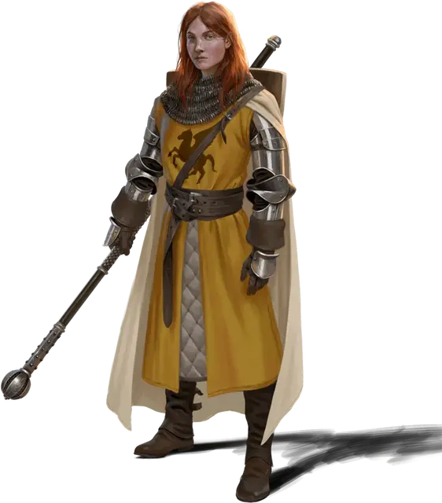

Мерсион
Mercion
Средний Гуманоид (Человек, Жрица), законно-добрый, именной НИП

Класс Доспеха 19 (латы)
Хиты 31 (9к8 - 9)
Скорость 30 футов
| мод | спас | ||
|---|---|---|---|
| СИЛ | 15 | +2 | +2 |
| ЛОВ | 10 | +0 | +0 |
| ТЕЛ | 9 | −1 | −1 |
| мод | спас | ||
|---|---|---|---|
| ИНТ | 12 | +1 | +1 |
| МДР | 17 | +3 | +5 |
| ХАР | 17 | +3 | +5 |
Навыки Медицина +5, Проницательность +5
Чувства пассивное Восприятие 13
Языки Общий, Дварфийский
Опасность 3 (700 опыта)
Бонус мастерства +2
Особенности
Особое снаряжение. Мерсион орудует боевым посохом +1[weapon +1].
Действия
Мультиатака. Мерсион совершает одну атаку Божественным сиянием и одну атаку Боевым посохом +1. Она может заменить одну из этих атак накладыванием заклинания.
Божественное сияние. . Рукопашная или дальнобойная атака оружием: +5 к попаданию, досягаемость 5 футов или дистанция 60 футов, одна цель. Попадание: 13 (3к8) урона излучением.
Боевой посох +1. Рукопашная атака оружием:+4 к попаданию, досягаемость 5 футов, одна цель. Попадание: 6 (1к6 + 3) дробящего урона или 7 (1d8 + 3) дробящего урона при использовании двумя руками.
Сияющее пламя (перезарядка 5-6). Мерсион создает взрыв магического сияющего пламени, центрированный в точке, которую она может видеть в пределах 120 футов. Каждое существо в сфере радиусом 20 футов с центром в этой точке должно совершить спасбросок Ловкости Сл 13, получая 28 (8к6) урона излучением при провале или половину этого урона при успехе.
Использование заклинаний. Мерсион накладывает одно из следующих заклинаний, используя Мудрость в качестве базовой характеристики (Сл спасброска от заклинаний 13):
• Неограниченно: свет [light], уход за умирающим [spare the dying];
• 2/день каждое: приказ [command], сотворение пищи и воды [create food and water], лечение ран [cure wounds], огонь фей [faerie fire], удержание личности [hold person], возрождение [revivify];
• 1/день: защита от смерти [death ward].
Описание
Мерсион сочетает в себе черты прирожденного лидера и заботливого опекуна.У нее открытая манера держаться, которая успокаивает и вдохновляет окружающих.
Мерсион поклоняется не божеству, а скорее идеалу: «Истина дает жизнь искусству и красоте, а те, кто прибегает к обману, должны быть осуждены и наказаны. Свет - это ее владения».